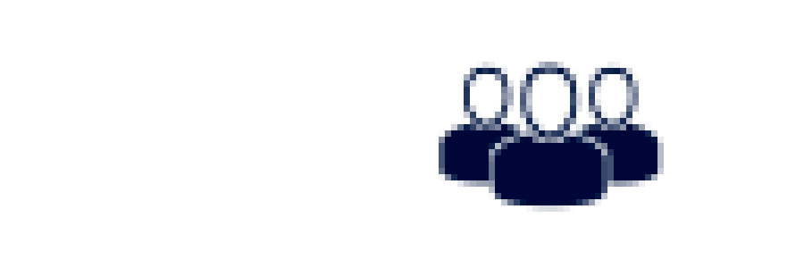

-
Uso de colores para texto y fondo, incluyendo al menos colores degradados en alguna de sus cajas.
Texto de color blanco sobre fondo verde.
Colores degradados en la caja
-
Inclusión de tipografías externas de Google Fonts, Adobe Edge Web Fonts o un servicio similar on line.
Texto con fuente kavivanar de google
Texto con fuente sunshiney de Adobe Edge
-
Distintos encabezados.
Encabezado h1
Encabezado h2
Encabezado h3
Encabezado h4
-
Uso de caracteres especiales
Signo mayor > con > y Signo menor < con <
Signo menor < con < y Signo mayor > con >
-
Incluir, imágenes de tipo bitmap y vectorial.
Imagen bitmap

Imagen vectorial
-
Incluir algún vídeo.
-
Incluir bordes redondeados en alguna de sus cajas.
Borde Superior Izquierda 50%
Borde Superior Derecha 30%